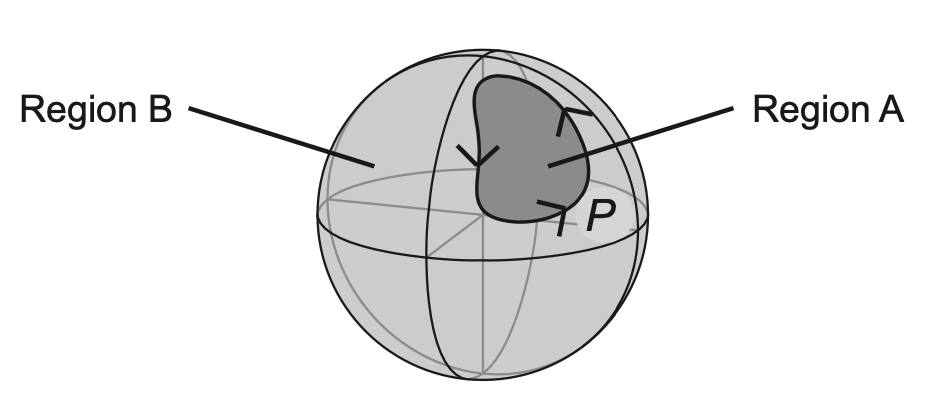

Introduction
Let us consider a physical system described by a Hamiltonian that depends on a set of parameters $\boldsymbol \lambda=(\lambda_1,\lambda_2,\dots)$. These parameters do not represent the degrees of freedom of the system like position and momentum, rather they describe things such as the mass of a particle, the strenght of a potential and so on.
For each $H(\boldsymbol \lambda)$ there exists a set of eigenstates such that
$$ H(\boldsymbol \lambda)\ket{n,\boldsymbol \lambda}=E_n(\boldsymbol \lambda)\ket{n,\boldsymbol \lambda}$$
$$\ket{n,\boldsymbol \lambda}\to \underbrace{e^{i\gamma_n(\boldsymbol \lambda (t))}}_{\textrm{Berry phase}} \ket{n,\boldsymbol \lambda} $$
However the equation above does not completely determine the basis function $\ket{n,\boldsymbol \lambda}$; We can change arbitrarly the phase $\gamma_n(\boldsymbol \lambda)$ of any eigenstate which is called
Berry phase
Suppose we start off with a hamiltonian and than we slowly change the parameters for a time $T$ until it reaches a different hamiltonian, this means that $\boldsymbol \lambda=\boldsymbol \lambda(T)$. For the adiabatic theorem we can say that if we start on an energy eigenstate, and the system changes slowly enough
How slow you have to be in changing the parameters depens on the energy gap from the state you're in to the nearest other state. The smaller the gap, the slower you have to change the parameters. A way of showing this without doing long calculations is the following:
We know from the Heisemberg uncertanty principle that $T \Delta E \ge \hbar/2$. We want the uncertanty in the Energy to be way smaller than the energy gap$E_g \gg\Delta E$, so $E_g \gg \frac{\hbar}{2T}$, so if we make $T$ big enought it can be archieved,
and has no degeneracies, then the system will cling on that energy eigenstate
This means that the equation of motion of a particle that for time $t=0$ is equal to $\ket{\psi_n(t=0)}=\ket{n,\boldsymbol \lambda(0)}$ is
$$
|\psi_n(t)\rangle=\underbrace{e^{i\gamma_n(\boldsymbol \lambda (t))}}_{\textrm{Berry phase}}\cdot
\underbrace{e^{-\frac i\hbar\int_0^t E_n(\boldsymbol \lambda (t')) dt'}}_\textrm{dynamical phase}|n,\boldsymbol \lambda (t)\rangle
$$
Where the first exponent comes from eq. . We now insert the equation above into the time-dependent Shrodinger equation
$$
i\hbar\partial_t|\psi_n(t)\rangle=H(\boldsymbol \lambda(t)) |\psi_n(t)\rangle
$$
By plugging equation into the right term term of equation we get we get that $$H(\boldsymbol \lambda(t)) |\psi_n(t)\rangle = E_n(t)\ket{\psi_n(t)}$$
and by plugging equation into the left term of equation we get
$$
i\hbar\partial_t|\psi_n(t)\rangle=
-\hbar \dot \gamma_n(t)|\psi_n(t)\rangle + E_n(t)|\psi_n(t)\rangle + e^{i\phi_n(t)}\partial_t|n,t\rangle
$$
where we have defined $e^{i\phi_n(t)} \equiv e^{i\gamma_n(\boldsymbol \lambda (t))}e^{-\frac i\hbar\int_0^t E_n(\boldsymbol \lambda (t')) dt'}$
By equating the right terms in equations and we get that
$$
i\hbar e^{i\phi_nt(t)}\partial_t|n,t\rangle=\hbar\dot \gamma_n(t)\ket{\psi_n(t)} =\hbar\dot \gamma_n(t)e^{i\phi_n(t)}\ket{n,t}
$$
now we multiply the term on the left and on the right of equation by $\hbar^{-1}e^{-i\phi_n(t)} \bra{n,t}$
$$
\dot \gamma_n(t)=i\bra{n,t} \partial_t\ket{n,t}
$$
We can re-express it in terms of $\boldsymbol \lambda$
$$
\dot \gamma_n(t)=\dot{\boldsymbol \lambda}\cdot\underbrace{i\bra{n,t} \partial_{\boldsymbol \lambda}\ket{n,t}}_{\equiv \mathbf A_n(\boldsymbol \lambda)}
$$
Where $\mathbf A_n(\boldsymbol \lambda)$ called the Berry connection
This means that we can calculate the total change in $\gamma_n(t)$ can be obtained by doing a line integral in the space of parameters $\boldsymbol \lambda$ over the path $\mathcal P$ of values that $\boldsymbol \lambda$ assumes during the time evolution
$$
\gamma_n=\int_\mathcal{P} \mathbf A_n(\boldsymbol \lambda) \cdot d\boldsymbol \lambda
$$
$$\ket{n,\boldsymbol \lambda}\to e^{if_n(\boldsymbol \lambda)}\ket{n,\boldsymbol \lambda}$$
Keep in mind however that the eigenstates are defined up to a phase, meaning that we can re-define the base vectors like so
(equation
). If we apply this substitution
into the formula of $\mathbf A_n$ we have that
$$
\mathbf A_n(\boldsymbol \lambda) =i\bra{n,t} \partial_{\boldsymbol \lambda}\ket{n,t}\to i\bra{n,t} \partial_{\boldsymbol \lambda}\ket{n,t} - \partial_{\boldsymbol \lambda}f_n(\boldsymbol \lambda)
$$
$$\mathbf A_n \to \mathbf A_n - \partial_{\boldsymbol \lambda}f_n$$
So the system is invariant under the gauge transformation in equation
. If we do this transformation to equation
we have that
$$
\gamma_n=\int_\mathcal{P} \mathbf A_n(\boldsymbol \lambda) \cdot d\boldsymbol \lambda - \int_\mathcal{P} \partial_{\boldsymbol \lambda}f_n(\boldsymbol \lambda) \cdot d\boldsymbol \lambda= \int_\mathcal{P} \mathbf A_n(\boldsymbol \lambda) \cdot d\boldsymbol \lambda + f(\boldsymbol \lambda(0))-f(\boldsymbol \lambda (T))
$$
This means that if the path $\mathcal{P}$ is open we can always choose a function $f_n$ such that
$f(\boldsymbol \lambda(0))-f(\boldsymbol \lambda(T))=\int_\mathcal{P} \mathbf A_n(\boldsymbol \lambda) \cdot d\boldsymbol \lambda$,
thus we can conclude that one can always choose a suitable $f(\boldsymbol \lambda)$ such that $\gamma_n$ accumulated along the path $\mathcal P$ is calceled out leaving equation
with only the dynamical phase.
However if the path is closed $\boldsymbol \lambda(0)=\boldsymbol \lambda(T)$, in order to make the phase change
in equation single value we must have that
$$
e^{f(\boldsymbol \lambda(0))-f(\boldsymbol \lambda(T))}=1
$$
so
$$f(\boldsymbol \lambda(0))-f(\boldsymbol \lambda(T))=2n\pi \quad n\in \R$$
This leads us to the important result that
$$\gamma_n=\oint_{\mathcal P} \mathbf A_n(\boldsymbol \lambda)\cdot d\boldsymbol \lambda + 2n\pi$$
This time, if the line integral is not a multiple of $2\pi$ (and there is no reason why it should) there is no way of choosing a suitable $f_n$ to
cancel it out and the Berry phase in equation is there to stay
Berry curvature
$$F_{\mu\nu}=\partial_\mu A_\nu-\partial_\nu A_\mu$$
In EM the field thensor $F_{\mu\nu}$ is defined as in equation
.
Since Berry conenction has the same Gauge invariance as the one of the EM vector potential it is useful to define, a gauge field tensor derived from the Berry connection:
$$
\Omega_{\mu\nu}^n =\partial_\mu A^n_\nu(\boldsymbol \lambda) - \partial_\nu A^n_\mu(\boldsymbol \lambda)
$$
This new field tensor is defined as Berry curvature and it is gauge independent just like
$F_{\mu\nu}$!The notation has changed a bit, now $A_\mu^n\equiv (\mathbf A_n)_\mu$
Other formulas for $\Omega_{\mu\nu}$
With a few mathematical steps it is possible to re cast the Berry curvature into a different form that might be useful later
$$
\partial_\mu A^n_\mu =i\partial_\mu \bra{n,\boldsymbol \lambda}\partial_\nu n,\boldsymbol \lambda \rangle=
i\bra{\partial_\mu n,\boldsymbol \lambda}\partial_\nu n,\boldsymbol \lambda \rangle + i\bra{n,\boldsymbol \lambda}\partial_\mu\partial_\nu n,\boldsymbol \lambda \rangle
$$
$$
\boxed{\Omega_{\mu\nu}^n =i\bra{\partial_\mu n}\partial_\nu n\rangle - i\bra{\partial_\nu n}\partial_\mu n\rangle}
$$
It is also possible to express $\Omega$ in terms of the eigenstates of the Hamiltonian with some mathematical manipulation
$$
\bra{n'} H \ket{n}=\delta_{n'n} \to \partial_\mu \bra{n'} H \ket{n}=0
$$
$$
\partial_\mu \bra{n'} H \ket{n}=\bra{\partial_\mu n'}H\ket{n} + \bra{n'}H\ket{\partial_\mu n} + \bra{n'} \partial_\mu H\ket{n}
$$
$$
E_{n}\bra{\partial_\mu n'}n\rangle + E_{n'} \bra{n'}\partial_\mu n\rangle=\bra{n'} \partial_\mu H\ket{n}
$$
$$
(E_{n'}-E_n)\bra{n'} \partial_\mu n\rangle=\bra{n'} \partial_\mu H\ket{n}
$$
$$
\bra{n'}\partial_\mu n\rangle= \frac{\bra{n'} \partial_\mu H\ket{n}}{E_{n'}-E_n}
$$
Now we write equation like so
$$
\Omega_{\mu\nu}^n =i\bra{\partial_\mu n}\partial_\nu n\rangle - (\mu \leftrightarrow \nu)= i\sum_{n'\neq n}\bra{\partial_\mu n}n'\rangle\bra{n'}\partial_\nu n\rangle - (\mu \leftrightarrow \nu)
$$
By plugging in above equation we get
$$
\boxed{\Omega_{\mu\nu}^n=i\sum_{n'\neq n} \frac{\bra{n}\partial_\mu H\ket{n'}\bra{n'} \partial_\nu H\ket{n}}{(E_{n'}-E_n)^2}- (\mu \leftrightarrow \nu)}
$$
This last form of the Berry curvature has the advantage that no differentiation of the wavefunction is needed. This equation also tells us that
$$ \sum_n \Omega_{\mu\nu}^n (\boldsymbol \lambda)=0 $$
Stokes theorem
 Representation of the Stokes theorem in 3D, the border of the surface $\partial \Sigma \equiv \mathcal P$
Representation of the Stokes theorem in 3D, the border of the surface $\partial \Sigma \equiv \mathcal P$
From the Stokes theorem we have that
$$
\gamma_n=\oint_\mathcal{P} A^n_\mu\: d\lambda^\mu=\frac 12 \int_\Sigma \Omega_{\mu\nu}^n\: d\lambda^\mu \wedge d\lambda^\nu
$$
where we have used the Einstein convention of summation and the $\wedge$ operator represents the exterior product
There is a subtelty in this last equation, as we know the Berry curvature tensor in Gauge-invariant, so the integral over the surface is too, but the integral over the closed path of the Berry connection is defined up to a factor $2n\pi$ that is gauge dependant.
So is there a modulo $2\pi$ ambiguity or not?
The answer is that if $\gamma_n$ is to be determined using the knowledge of $\ket{n,\boldsymbol \lambda}$
only on the curve $\mathcal P$ then it is really well defined modulo $2\pi$. In this case we can re-write
equation as
$$
\frac 12 \int_\Sigma \Omega_{\mu\nu}^n\: d\lambda^\mu \wedge d\lambda^\nu:=\oint_\mathcal{P} A^n_\mu\: d\lambda^\mu
$$
Meaning that the integral over the surface $\mathcal \Sigma$ is equal to one of the values of the integrals along the closed path $\mathcal P$
But what kind of Gauge gives the "correct" answer? If we choose a gauge that is continuous and smooth
everywhere along the surface $\Sigma$ including on its boundary $\mathcal P$ then equation becomes unambiguous.
While it is possible to make a radical gauge transformation that shifts $\gamma_n$ by $2\pi$ when regarding $\ket{n,\boldsymbol \lambda}$ as a function defined only in the neighborhood of $\mathcal P$, such a gauge change cannot be smoothly continued into the interior $\mathcal S$ without creating a vortex-like singularity of $\gamma_n(\boldsymbol \lambda)$.
Chern theorem
Since there are so many parallelism between Electromagnetism and Berry phase, one could ask if there
was any such things as the equivalent of electrical charges

Here we divide the surface of the sphere in two different surfaces \mathcal A and \mathcal B that share the edge \mathcal P
Let's take as an example Gauss's theorem. It tells us that the flux of the field through a closed surface is equal to the charges inside.
Now let's calculate the flux of the Berry curvature thorugh a closed surface. We can divide the closed surface as two different open surfaces that share the same edge $\mathcal P$.
Thanks to stokes theorem the flux throught the surface $\mathcal A$ is $\oint_\mathcal{P} \mathbf A \cdot d\boldsymbol \lambda$, but the flux throught the surface $\mathcal B$ is $-\oint_\mathcal{P} \mathbf A \cdot d\boldsymbol \lambda$.
Theese two integrals must be equal modulo $2\pi$, so
$$\oint_\mathcal{S} \Omega_{\mu\nu}^n d\lambda^\mu \wedge d\lambda^\nu =2\pi C \quad\quad C\in \mathbb Z$$
This means that the flux thought a closed surface of the
Berry curvature is quantized
The constant C in known as the Chern number. Note that when the Chern index is nonzero, it is impossible to construct a smooth and continuous gauge over the entire surface $\mathcal{S}$. If such a gauge did exist, then we could apply Stokes’ theorem directly to the entire surface and conclude that the Chern number vanishes, in contradiction with the assumption.
But what are theese "pseudo-charges" inside the closed surface that generate the flux?
In E.M. a simple way to spot charges (or monopoles) is to look at the field tensor and see if as some point it diverges as $1/(\mathbf r-\mathbf{r_0})^2$. Let's take a look at $\Omega_{\mu\nu}$ (eq. ) and see if we can spot anything similar In the equation below I expressed explicitely the $\boldsymbol \lambda$ dependence in the denomiator and condensed the fomula using the wedge product $\wedge$
$$
\Omega_{\mu\nu}^n=i\sum_{n'\neq n} \frac{\bra{n}\partial_\mu H\ket{n'}\wedge \bra{n'} \partial_\nu H\ket{n}}
{\underbrace{[E_{n'}(\boldsymbol \lambda)-E_n(\boldsymbol \lambda)]^2}_
{\substack{\text{what happens if for some } \boldsymbol \lambda=\boldsymbol \lambda_d \\\text{ the two energies are the same?}}}}
$$
So, suppose that for some $\boldsymbol \lambda=\boldsymbol \lambda_d$ we have that $E_n (\boldsymbol \lambda_d)=E_m(\boldsymbol \lambda_d)$, now we expand the energies near $\boldsymbol \lambda_d$ at first order
$$
\begin{cases}
E_n(\boldsymbol \lambda)\, \approx E_n(\boldsymbol \lambda_d) +\, \partial_{\boldsymbol \lambda} E_n|_{\boldsymbol \lambda =\boldsymbol \lambda_d}\cdot (\boldsymbol \lambda-\boldsymbol \lambda_d)\\
E_m(\boldsymbol \lambda)\approx E_n(\boldsymbol \lambda_d) + \partial_{\boldsymbol \lambda} E_m|_{\boldsymbol \lambda =\boldsymbol \lambda_d}\cdot (\boldsymbol \lambda-\boldsymbol \lambda_d)\\
\end{cases}
$$
This means that
$$
E_n(\boldsymbol \lambda)-E_m(\boldsymbol \lambda)\approx \partial_{\boldsymbol \lambda} (E_n-E_m)|_{\boldsymbol \lambda =\boldsymbol \lambda_d}\cdot (\boldsymbol \lambda-\boldsymbol \lambda_d)
$$
so the denominator of the berry curvature near $\boldsymbol \lambda_d$ goes like $ 1/(\boldsymbol \lambda-\boldsymbol \lambda_d)^2$.
This means that there are "charges" or "monopoles" that induce the flux throught the closed surface, and they are localized where 2 (or more) energy levels cross